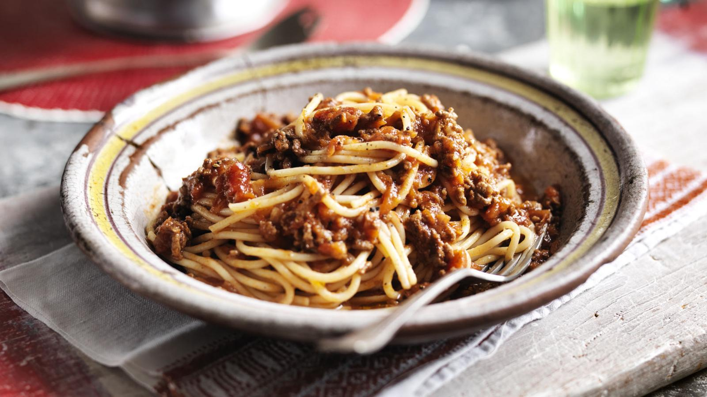

Spaghetti Bolognese

Description
Spaghetti Bolognese is one of the few dishes I can cook without needing a recipe. The recipe that I use
came from my father's recipe folder. I'm not sure where he copied the recipe from.
Spaghetti bolognese is basically a meat sauce with a tomato base on top of spaghetti. The sauce is slow-cooked for three quarters of an hour.
At the end of cooking, the sauce is rich with the taste of the herbs, spices and wine.
Ingredients
- Mince
- Canned tomatoes
- tomato paste
- onion
- garlic
- red wine
- oregano
- basil
- salt
- pepper
- olive oil
Steps
- Brown mince in olive oil.
- Remove mince from pan and drain.
- Soften chopped garlic and onion in pan in olive oil.
- Add brown mince, canned tomato and tomato paste.
- Add red wine, herbs and spices.
- Bring to heat and then simmer for 45 minutes, stirring occasionally.
- Serve sauce on top of spaghetti and top with parmesan.